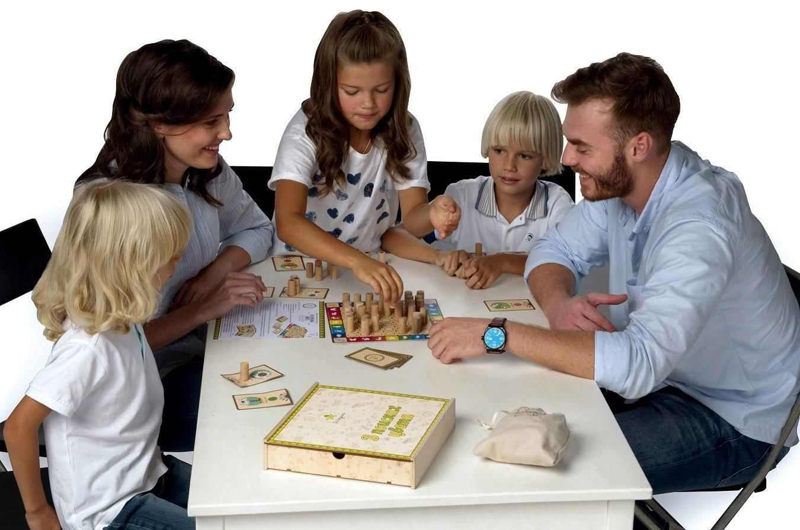

Настольные игры всегда актуальны и привлекают как взрослых, так и детей. В нашем магазине можно найти не только классические, но и современные варианты настольных игр, выполненные в новых форматах.
Каждый покупатель найдет себе развлечение по душе: кому-то нравятся головоломки, кто-то предпочитает сложные стратегии и увлекательный геймплей. Ассортимент включает игры для всей семьи или компании друзей.
Теперь не нужно ломать голову над тем, как разнообразить вечеринку или долгие зимние вечера!
Регулярно проводимые компанией игротеки – это увлекательные события, где опытные аниматоры демонстрируют бестселлеры и новинки рынка. Эти мероприятия проходят в популярных местах, таких как кафе, бары и улицы городов. Многие игротеки бесплатны и дарят яркие эмоции и запоминающиеся впечатления.
